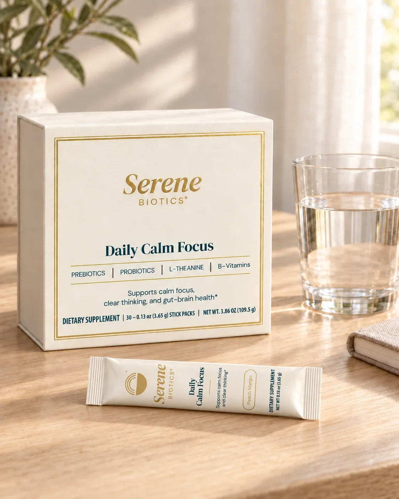
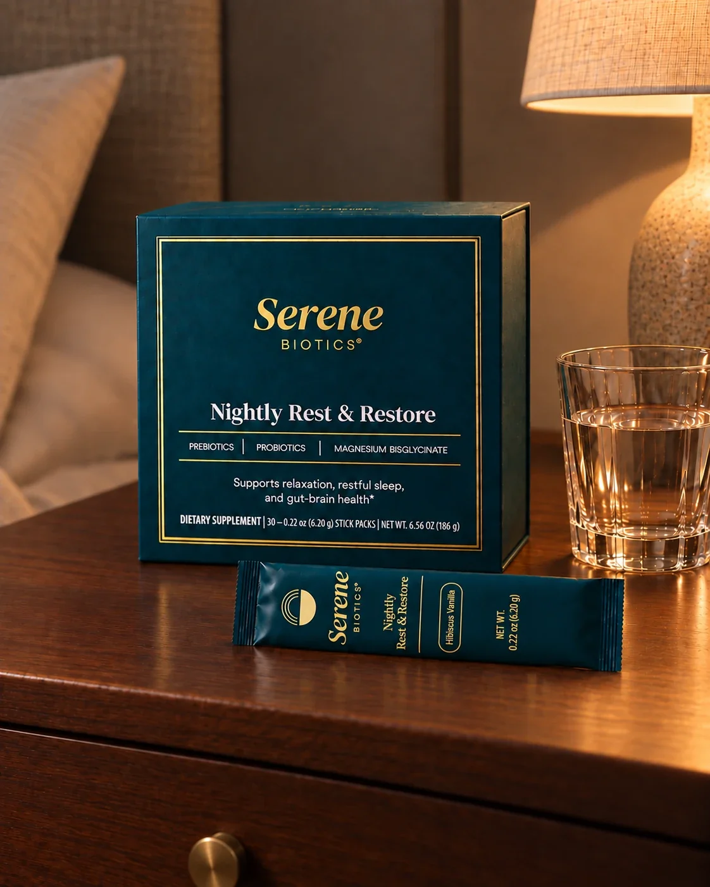
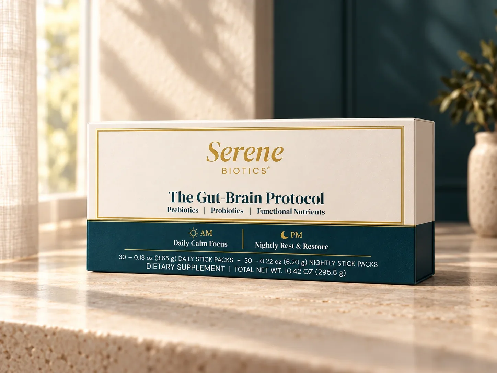
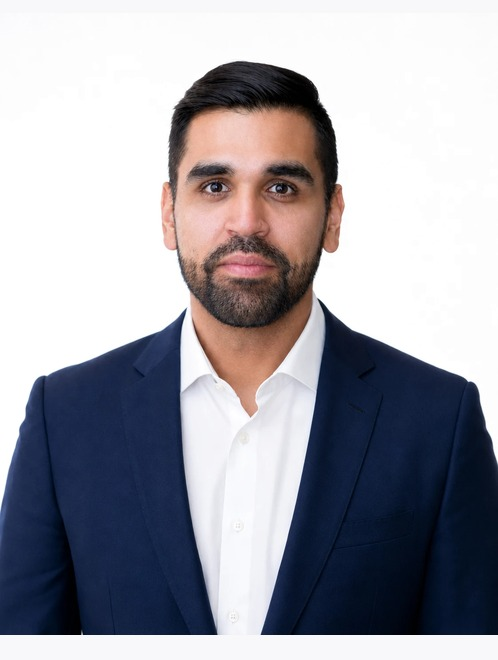
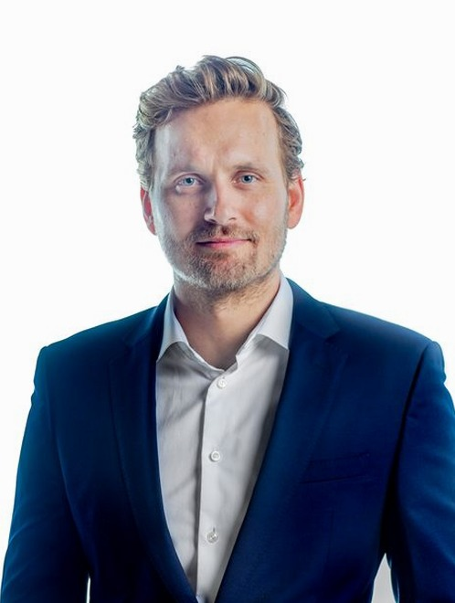

Serene Biotics
Pre-orders openA morning and evening gut-brain protocol.
Daily Calm Focus for the morning. Nightly Rest & Restore for the evening.
See the formulas and research (opens in a new tab)

We develop, acquire and back science-led brands. Each has its own company and funding, with one Viridian team across product, channels, capital and operations.

From daily gut-brain support to nutrition for older adults, each business starts with a specific consumer need.
A morning and evening gut-brain protocol.
Daily Calm Focus for the morning. Nightly Rest & Restore for the evening.
See the formulas and research (opens in a new tab)

Practical nutrition
for older adults.
More details will follow as the product is finalized.
We develop new brands, acquire existing brands and invest in founders. Each brand operates as its own company with its own funding.

Founder & CEO
Brand strategy, product and commercial execution.
At Procter & Gamble, Aditya built brands from formulation to national retail, including Align Probiotics. At Amazon, he led multi-billion-dollar businesses across Health, Household and Personal Care.
At Viridian, Aditya sets each brand’s proposition, positioning, price and claims boundaries.

Co-founder & President
Capital strategy, systems and company-building.
Kyle built a national professional services firm to hundreds of employees, sold it and led its integration into a global enterprise. He has since started, scaled, acquired and advised companies across technology, consumer and private investment.
At Viridian, Kyle leads the financial engine, systems and applied AI that help the team operate the portfolio.
Tell us about the brand, the business or the opportunity—and where you want to take it.
hello@viridianbrands.com